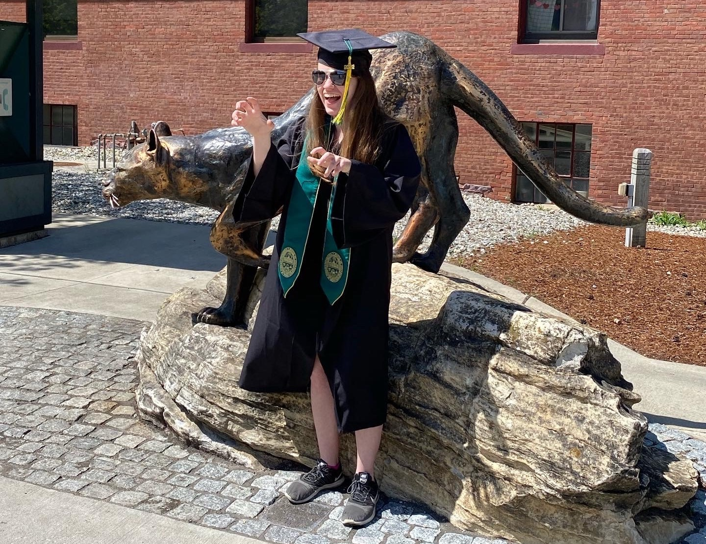

Hello! My name is Sarah Grobe. I graduated from the University of Vermont (UVM) in May 2023 with a Master's degree in Complex Systems and Data Science as part of the Accelerated Master's Program (AMP). I earned my Bachelor's degree in Data Science in May 2022, also from UVM. One skill that I learned as part of my studies was website development and design, so I chose to apply those skills to create a website for my own personal use. The goal of this website is to make it easier for me to document and share my information and the projects I've worked on so that I can easily reference them later and even share them with colleagues. Thank you for stopping by, and please do not hesitate to reach out to me with any questions or comments!
About Me
As mentioned above, I earned two degrees over my five years spent at UVM. I was drawn to this school both by its stellar location, sandwiched between the Green Mountains and Lake Champlain, and its unique focus on sustainability. Attending this school has given me a newfound appreciation for nature, as well as steps that I can take as an individual to help protect our planet. While attending UVM, I also discovered my love for statistics and computer science. I was first exposed to the subjects in my AP Statistics course in high school. While I enjoyed that class tremendously, I always saw math and statistics as a tool, rather than a field of its own. When I learned about the Data Science major during my freshman year of college, I decided to take the leap and switch over from my original major of civil engineering, and never looked back. I find the concept of being able to learn valuable information from heaps and messes of data to be incredibly captivating, and I'm excited to continue to learn while being able to apply the knowledge I've gained in the classroom.
When I wasn't in the classroom, a great deal of my time was spent playing trombone with the UVM Pep Band. The unofficial leaders of the student section, the Pep Band performs at nearly every home hockey and basketball game at UVM, as well as a few other events around campus, playing music during breaks in the play and helping lead the crowd in chants and cheers. Although I've since moved away from Vermont and am no longer able to attend and play at the games in person, I still cheer on my alma mater from afar, and have worked to maintain many of the wonderful relationships I've made with members of the Pep Band and the athletic department.
In addition to supporting UVM Athletics, I am also a devout fan of the Minnesota Vikings football team and the U.S. Women's National Soccer Team, often referred to as the USWNT. In both cases, I can be found dressed head to toe in team attire when watching their games, and often screaming at my TV, both in times of joy and distress. Beyond sports, I also enjoy getting some sun in my hammock, and rewatching my favorite TV shows. My top two choices are Chuck and Parks and Recreation, and there's a pretty high chance I'm in the middle of a rewatch of at least one of them at any given time.
My Work & Experience
Professional Experience
Data Analyst, Bowdoin College Office of Institutional Research
Following my graduation from UVM, I joined the talented team working in the Office of Institutional Research, Analytics, and Consulting at Bowdoin College. Working with other members of the office and the College, we fill a number of ad hoc requests including developing data visualizations and reports using Tableau, as well as coding languages such as SQL, Python, and R. My work in the IRAC office specifically also focuses on helping with external reporting and conducting peer comparisons.
Ticket Operations & Data Analyst Intern, UVM Athletics Dept.
While completing my graduate studies, I worked part-time as an intern in the Ticket Office at UVM Athletics. I had a wide range of responsibilities in this position, from building visualizations and comparisons to historical ticketing data, to helping maintain a database of ticket sales, to helping with customer service and administrative duties around the ticket office. This position has helped hone my leadership, teamwork, and multitasking abilities, since it is at times a fast-paced environment with a bunch of moving parts. Additionally, when one of my supervisors left for another job opportunity, I worked closely with the rest of the ticket staff, both during my scheduled office time and at additional events, to do what I could to help keep the ticket office running smoothly.
Calculator Intern, UVM Real Food Working Group
During my sophomore year of college, I worked an internship with the UVM Real Food Working Group. This group was dedicated to increasing the amount of "real food" served in campus facilities, according to the Real Food Challenge. My job within this group, along with another intern, was to sort through the invoices for everything purchased by UVM Dining over the course of the year, input all food items into an Excel spreadsheet, and categorize each of the items according to any criteria of the Real Food Challenge that they meet. In order to do this work accurately and efficiently, it required frequent check-ins with the other intern, our UVM Dining liaison, and the Real Food Working Group as a whole, as well as occasional (virtual) meetings with a Real Food employee in California. We also needed to conduct research on the products in order to determine which, if any, standards of real food they met. For some products, this was as simple as checking the label for something like a "fair trade certified" emblem, but often it required reaching out to companies via phone or email in order to ask questions about specific products. By the end of the academic year, we had inputted, categorized, and sorted thousands of items for UVM Dining.
Teaching Assistant, UVM Computer Science Dept.
During my senior year, I was an undergraduate teaching assistant (TA) for CS 204, which teaches the fundamentals of database management systems, as well as how to create and access databases using SQL. I worked closely with the professor of the course, as well as a graduate TA, to help grade weekly homework assignments and midterm and final exams, as well as help work out any questions from students or grading disputes that arose. In working as a TA, I was able to not only solidify my understanding of the course material, but also learn better time management and teamwork skills. In particular, I was aware that any mistakes I made while grading or helping students would have an impact on their grades, as well as what they took away from the class. For this reason, it was absolutely vital that I have a solid understanding of the material, a good eye for detail, and know when to ask for help.
Outside Data Science
During my senior year of undergrad, I served as one of two section leaders for the Low Brass section of the UVM Pep Band, overseeing our trombones, sousaphones, mellophones, and baritones. As a result of the pandemic, our group hadn't been able to meet or really recruit for nearly two years prior, meaning that much of the section that I was responsible for during the year (and much of the band as a whole) was comprised of new members who didn't know how the group operated, or even how to get around our labyrinthian athletics complex. This experience taught me invaluable leadership and time management skills, since I was attending around four band events per week during our peak season and managing ten or more members of the section at these events, on top of my workload as a student. This experience also helped advance my abilities to work with others, both those that I am friendly with and know well, in the case of my co-section leader and the other members of my section, and those who I have had little or no interaction with prior, in the case of many of the leaders of other sections, with whom I needed to help coordinate things like attendance and setup logistics.
In a slightly more professional context, I also worked at an ice cream shop/restaurant for several years in high school and college. I not only gained experience working with my coworkers in order to efficiently coordinate orders, but also in working with customers, taking orders and helping resolve any concerns that they might have. Working in food service, it is important to not only be efficient, but also to be careful and accurate, particularly in the case of something like a food allergy. This working experience not only helped my teamwork abilities, it also helped make me more responsible and patient.
Prior to working at the ice cream shop, I also spent quite a few of my summers on the soccer field, volunteering at soccer camps through my local parks and recreation department. I have always been incredibly passionate about soccer, both as a player and a viewer, and being able to give back to some of the very camps that helped me develop a love for the game when I was little was a very rewarding experience.
Coding & Analysis
I have programming experience in C++, HTML/CSS, Java, PHP, Python, R, SAS, and SQL. Some coding samples can be found on my GitHub page, and further descriptions of these repositories, as well as some of my other experiences, can be found below!
Projects
Master's Degree Project, Spring 2023
During the majority of my graduate year, I worked with a UVM Complex Systems & Data Science Ph.D. student, Yoshi Bird, on a research project related to her dissertation in which we evaulated utilizing social media data to develop a proxy measure for local homelessness. My primary responsibilities over the course of this project were mainly focused on data cleaning and basic visualizations, specifically developing a preprocessing script in Python to help clean the text data for further analysis, conducting a sentiment analysis on the text, and devloping exploratory visualizations to help understand these results. Despite graduating from UVM, it is my hope to continue working with Yoshi and the rest of the team on my own time in order to help continue our research.
Relevant links:
- Code: My personal GitHub repository
- Publication: An assessment of measuring local levels of homelessness through proxy social media signals
- Project Overview: Twitter thread
Honors College Undergraduate Thesis, Spring 2022
As a student in the Honors College, I completed an undergraduate thesis in order to graduate with the title of Honors College Scholar. For my thesis, I chose to work with one of my professors at UVM, Dr. Brian Beckage, and one of his post-docs, Dr. Serge Wiltshire, to look at a specific aspect of climate modeling in order to improve the accuracy of those models. After a little over a year, I presented the project in a public defense, and was able to graduate as a member of the relatively exclusive group of Honors College scholars. My thesis focused on a method for initializing soil carbon levels in environmental models, evaluating the efficacy of what is considered to be the best practice, and offering an alternate, and potentially more accurate, method of initialization.
Relevant links:
- Code: Finalized GitHub repository
- Publication: A Historically Driven Spinup Procedure for Soil Carbon Modeling
- Paper: My undergraduate thesis
Coding Experience & Samples
Python
Two of my graduate level courses, Data Science I and Data Science II, focused exclusively on conducting data analysis using Python. Throughout these two courses, we discussed extensively the pros and cons and various data structures, algorithms, and libraries within Python in order to efficiently conduct our analyses. Shown here is my final project that I submitted for Data Science II, featuring natural language processing, time series analysis, and extensive visualizations of the data. Within this GitHub repository is the final paper which I submitted for the project, which gives an overview of the data and methods used, as well as the final results of the project.
R
After Python, R is one of the coding languages I am most comfortable with. I used it in classes during my first three years of undergraduate, as well as fairly extensively during my senior year as I worked on my thesis. Available here is one of my mid-semester project submissions for my survival and logistic regression course, which I took during my junior year. The R files are divided up according their functions in order to help with organization and debugging.
Additionally, I've written a considerable amount of code in R for my Master's project, which can be found here.
HTML, PHP, CSS
As is shown in this website, I have an understanding of website creation using HTML, PHP, and CSS in combination. As another example of this, and with slightly more to show, I've posted the website I created my freshman year as the final project in my intro to web development class. For this project, I created a fake website for the very real ice cream shop that I spent many of my summers working at. The code can be found here, and the website with the results can be found here.
C++
I have also taken two courses which focus on the language C++. Although these classes weren't particularly focused on data analytics, they did help expand my knowledge not only of C++ itself, but also of object-oriented programming, polymorphism, inheritance, and other challenging and complex concepts in computer science. Available here is my final project submission for my Advanced Programming course. I created a simple fishing video game using C++, in which the user can click on fish swimming across the screen, move the boat side to side with the arrow keys, and record their final score to a file.
Writing Samples
Academic Writing Samples
Papers I wrote on my own as a student
-
Formal Data Analysis Writeup - Submitted as part of my final project for one of my graduate courses, this paper is a formal writeup of the data gathering process, analysis, and results for this project. Additionally, the Python code for this project is available above.
-
Informal Code Review - Submitted for the same assignment as above, this is an informal review of the coding process, including challenges in completing the project and how those challenges were addressed.
-
Capstone Research Paper - Submitted my freshman year as a final capstone paper for the Honors College, this paper is focused on research of the literature rather than a data analysis.
Publications and Pre-Prints
Papers written for projects as part of a team. Includes both pre-prints and peer-reviewed publications.
Contact Me
View some of my coding samples and other work on my GitHub page!
Connect with me on LinkedIn!
Feel free to send me an email with any questions: sgrobe875@gmail.com
Thanks so much for visiting!